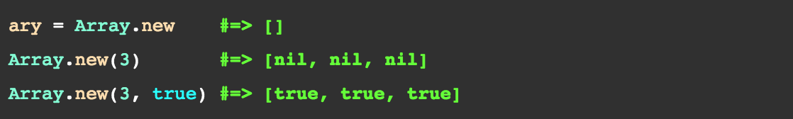
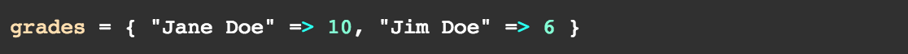

First things first: let's learn about the arrays! Arrays are simply an ordered list of elements. An array can consist of a mix of objects such as a string, an integer, or a float. They are integer-indexed, meaning that the first element within the array has an index of 0, the second one is 1, and so on. If one wants to fetch from the last of the list, a negative integer index can be used. For example, the last element has an index of -1, the second to last has an index of -2, and so on. Arrays are created by using a literal constructor "[ ]". You can also call a method Array.new to create an array. To insert elements, you can simply write: array_name = (1, "hat", 31.5). Another way to create an array is to write: Array.new(), in which the argument accepts the number of slots you want the array to hold. 
Hashes are similar to arrays, in that they hold items within itself which is why hashes have are sometimes called "associative arrays". The main difference is that hashes act like a dictionary and are identified by "{ }". What I mean is, hashes run on a 'key-and-value' system in which each key is assigned a value. For example, here's how a hash looks like:  Unlike arrays, which use indexes to locate an object, hashes use objects to find their assigned value as shown here: grades["jane doe"] => 10. When the keys are always symbols, you can express them as such: Symbols are immutable, or unchangeable, keys.
Advantages of using an array over a hash is that you can sort the elements the way you want: lexicographically, by size, or by length, etc. This comes in handy when doing things like finding the max (or min), average, total sum, etc. On the other hand, hashes are very useful when it comes to value insertions. It is good for assigning each key a specific value so you can use or retrieve them to your advantage in the future.